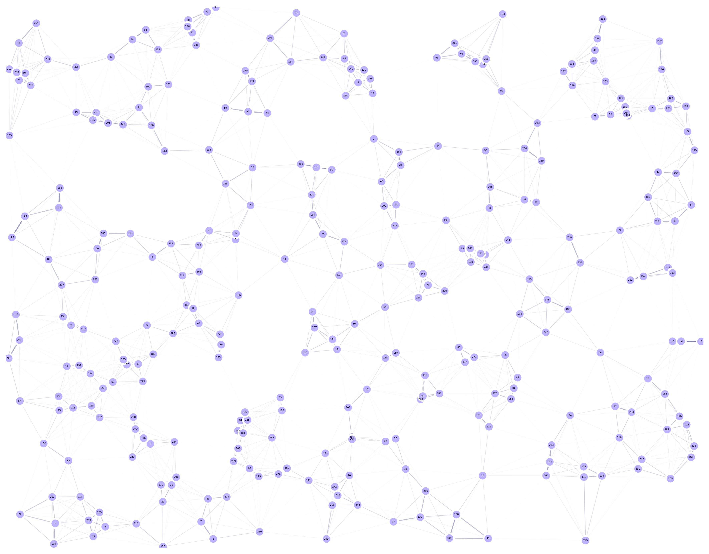

12. GA Discrete Optimization
To allow for the optimization of meta-populations, in which several habitats are pooled into a larger one, we’ve also added a set of functions to operate on a “discrete” level. In this case, the optimization is not performed on the continuous “xy” or “longitude/latitude” space, but on the locations at which the meta-populations are located.
In this demo, we will optimize the location of traps in a random-uniform landscape with the limitation of traps not being allowed in sites with an ID which corresponds to an even number (just as a test of the system).
12.1. Setting Landscape Up
To setup the initial locations of the traps in our landscape, we will add the sid column in the dataframe (sid for “site’s ID”):
trapsNum = 6
nullTrap = [0]*trapsNum
traps = pd.DataFrame({
'sid': [0, 0, 0, 0, 0, 0],
'x': nullTrap, 'y': nullTrap,
't': [0, 0, 0, 0, 1, 1],
'f': [0, 0, 0, 0, 0, 0]
})
tKernels = {
0: {'kernel': srv.exponentialDecay, 'params': {'A': .75, 'b': 0.100}},
1: {'kernel': srv.exponentialDecay, 'params': {'A': .75, 'b': 0.075}}
}
# Sites in which we don't want traps
banSites = set(range(0, points.shape[0], 2))
Generally speaking, if we are going to optimize the location of our traps, we can leave all the sid’s set to zero, as the algorithm will change their positions automatically.
The only exception to this rule would be if we plan for some traps to be fixed in some specific sites in our environment, in which case we do need to provide the specific ID of the site in which we will set our desired trap.
All the other parameters remain the same, namely:
sid: ID of the site at which the trap is located (if discrete optimization functions are used, otherwisexycoordinates take precedence).x (lon): X coordinate at which the trap will be located (ignored if discrete optimization functions are used).y (lat): Y coordinate at which the trap will be located (ignored if discrete optimization functions are used).t: Trap type as defined in the traps dictionary.f: Fixed in place boolean identifier.
Now, to instantiate our landscape, we simply pass our constructor the traps dataframe, along with the kernels, and the sites at which we want to ban traps:
lnd = srv.Landscape(
points, kernelParams=mKer,
traps=traps, trapsKernels=tKernels,
pointsTrapBanned=bannedSites
)
12.2. Setting GA Up
As previously mentioned, MGSurvE’s optimization functions now include a discrete optimization counterpart. If the landscape was correctly setup, our new chromosome initializer can be safely setup as follows for all supported applications:
toolbox.register(
"initChromosome", srv.initDiscreteChromosome,
ptsIds=lndGA.pointID,
fixedTraps=lndGA.trapsFixed,
trapsSiteID=lndGA.trapsSiteID,
banSites=lndGA.pointsTrapBanned
)
In which each “allele” in our “chromosome” represents the ID of the point in which the corresponding trap will be located.
Now, the stock mutation operation for this application swaps between possible sites IDs if the allele is selected for the operation:
toolbox.register(
"mutate", srv.mutateDiscreteChromosome,
ptsIds=lndGA.pointID,
fixedTraps=lndGA.trapsFixed,
banSites=lndGA.pointsTrapBanned,
indpb=MUT['indpb']
)
And the crossover operation swaps alleles between two chromosomes of the selected parents:
toolbox.register(
"mate", srv.cxDiscreteUniform,
fixedTraps=lndGA.trapsFixed,
indpb=MAT['indpb']
)
Finally, the fitness function works pretty much the same as the one used in the continuous optimization case, except that it takes an extra step to transform the sites ID into XY coordinates for the distances calculations:
toolbox.register(
"evaluate", srv.calcDiscreteFitness,
landscape=lndGA,
optimFunction=srv.getDaysTillTrappedPseudoInverse,
optimFunctionArgs={'outer': np.mean, 'inner': np.max}
)
12.3. Retreiving Results
Finally, as our chromosome stores the sites IDs instead of the coordinates, we have to do one final operation to map them back into an XY system:
bestChromosome = hof[0]
trapXY = srv.chromosomeIDtoXY(bestChromosome, lndGA.pointID, lndGA.pointCoords)
lnd.updateTrapsCoords(trapXY)
The code used for this tutorial can be found in this link.